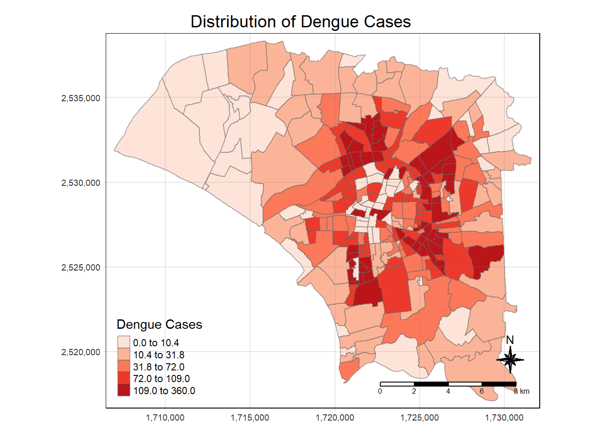
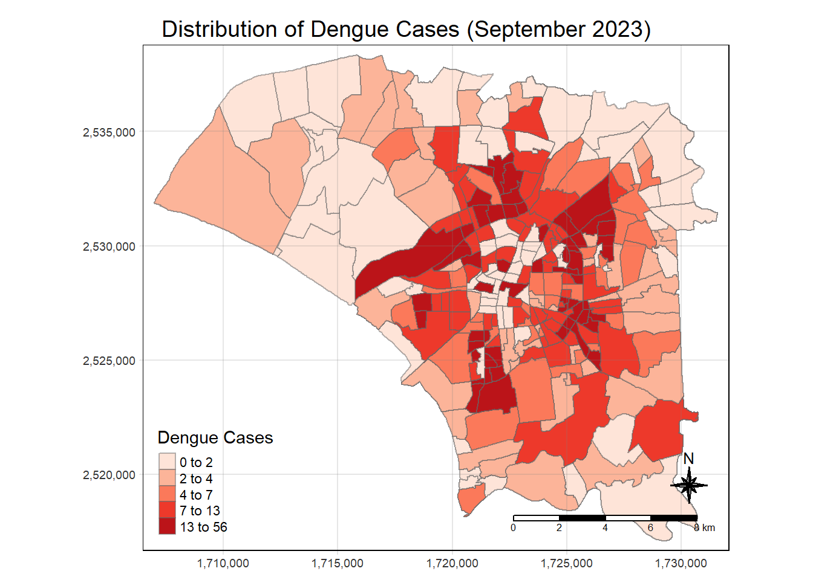
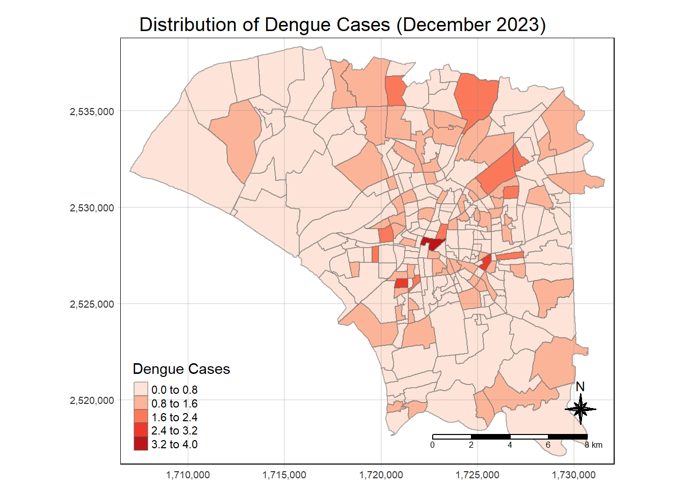
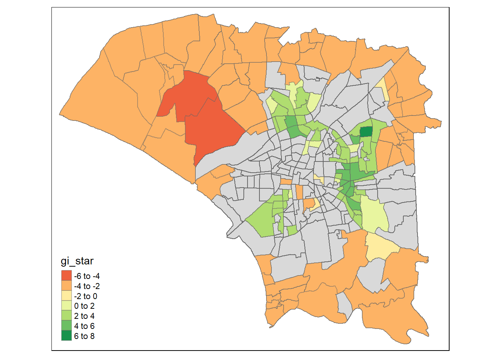

| Dataset | Description | Source |
|---|---|---|
| TAIWAN_VILLAGE_2020 | Geospatial data of village boundary of Taiwan | Historical map data of the village boundary: TWD97 longitude and latitude |
| Dengue_Daily(csv) | Aspatial data of reported dengue cases in Taiwan since 1998 | Dengue Daily Confirmed Cases Since 1998 |
Take-home Assignment 02: Application of Spatial and Spatio-temporal Analysis Methods to Discover the Distribution of Dengue Fever in Tainan City, Taiwan PART-1
Background
Dengue Hemorrhagic Fever (in short dengue fever) is one of the most widespread mosquito-borne diseases in the most tropical and subtropical regions. It is an acute disease caused by dengue virus infection which is transmitted by female Aedes aegypti and Aedes albopictus mosquitoes. In 2015, Taiwan had recorded the most severe dengue fever outbreak with more than 43,000 dengue cases and 228 deaths. Since then, the annual reported dengue fever cases were maintained at the level of not more than 200 cases. However, in 2023, Taiwan recorded 26703 dengue fever cases.
Objective
Explore and Uncovers:
- If the distribution of dengue fever outbreak at Tainan City, Taiwan are independent from space and space and time.
- If the outbreak is indeed spatial and spatio-temporal dependent, then, you would like to detect where are the clusters and outliers, and the emerging hot spot/cold spot areas.
Data Acquisition
For the purpose of this take-home exercise, two data sets are used, they are:
Install Packages & Importing Data
Install Necessary Packages
For this assignment, we will be using the following packages:
pacman::p_load(sf, sfdep, tmap, tidyverse)Importing Data
Geospatial Data
tainan <- st_read(dsn = "../data/geospatial",
layer = "TAINAN_VILLAGE")Aspatial Data
dengue <- read_csv("../data/aspatial/Dengue_Daily.csv")Data Wrangling
Confine dengue data to only include Tainan City dengue cases
dengue <- dengue %>%
filter(居住縣市 == "台南市")Confine tainan data to only include interest TownID: D01, D02, D04, D06, D07, D08, D32 & D39
tainan <- tainan[tainan$TOWNID %in% c("D01", "D02", "D04", "D06", "D07", "D08", "D32", "D39"), ]Aligning data for geospatial and aspatial data
Converting values from traditional to simplified Chinese
tainan$COUNTYNAME <- ifelse(tainan$COUNTYNAME == "臺南市", "台南市", as.character(tainan$COUNTYNAME))Renaming columns titles
dengue <- dengue %>%
rename('COUNTYNAME' = 居住縣市,
'TOWNNAME' = 居住鄉鎮,
'VILLNAME' = 居住村里)Extracting cases of interest within specific period
Append new columns for epidemiology week & year to dengue data
dengue$WEEK <- as.numeric(format(dengue$發病日, "%V"))
dengue$YEAR <- as.numeric(format(dengue$發病日, "%Y"))Confine period to include only epidemiology week 31-50 in year 2023
dengue <- dengue[dengue$WEEK >= 31 & dengue$WEEK <= 50 & dengue$YEAR == 2023, ]Manipulating Data
Ensure the values of age range stay consistent
dengue$年齡層 <- ifelse(dengue$年齡層 %in% c("0", "1", "2", "3", "4", "5-9"), "0-9", as.character(dengue$年齡層))Enhance the clarity of values to distinguish between those originating locally and those from overseas
dengue$感染國家 <- ifelse(dengue$是否境外移入 == "是", "Overseas", as.character(dengue$感染國家))
dengue$感染國家 <- ifelse(dengue$是否境外移入 == "否", "Local", as.character(dengue$感染國家))Plotting Choropleth Map
village <- dengue %>%
group_by(TOWNNAME,VILLNAME) %>%
summarise(CASES = sum(確定病例數))
dist_vill <- dengue %>%
group_by(TOWNNAME,VILLNAME, WEEK) %>%
summarise(CASES = sum(確定病例數))
Note
As some town have similar village name required to group by both TOWNNAME & VILL NAME
Getting the geospatial properties from tainan layers
#temp <- left_join(tainan,village)
dist_vill <- left_join(tainan,dist_vill) %>%
select(2:4, 11, 12)
village <- left_join(tainan,village) %>%
select(2:4, 11)Convert CRS of data projection to SVY21
tainan <- st_transform(tainan, crs = 3414)
village <- st_transform(village, crs = 3414)Fill villages with no dengue records to zero
village$CASES[is.na(village$CASES)] <- 0
Note
Assumption: The villages do not have any dengue cases
tmap_mode("plot")
tm_shape(village) +
tm_fill("CASES",
style = "quantile",
palette = "Reds",
title = "Dengue Cases") +
tm_layout(main.title = "Distribution of Dengue Cases",
main.title.position = "center",
main.title.size = 1.2,
legend.height = 0.45,
legend.width = 0.35,
frame = TRUE) +
tm_borders(alpha = 0.5) +
tm_compass(type = "8star", size = 2) +
tm_scale_bar() +
tm_grid(alpha = 0.2)
aug <- dist_vill %>%
filter(WEEK >= 31 & WEEK <= 35)tmap_mode("plot")
tm_shape(aug) +
tm_fill("CASES",
style = "quantile",
palette = "Reds",
title = "Dengue Cases") +
tm_layout(main.title = "August 2023 Distribution of Dengue Cases",
main.title.position = "center",
main.title.size = 1.2,
legend.height = 0.45,
legend.width = 0.35,
frame = TRUE) +
tm_borders(alpha = 0.5) +
tm_compass(type = "8star", size = 2) +
tm_scale_bar() +
tm_grid(alpha = 0.2)sep <- dist_vill %>%
filter(WEEK >= 36 & WEEK <= 39)tmap_mode("plot")
tm_shape(sep) +
tm_fill("CASES",
style = "quantile",
palette = "Reds",
title = "Dengue Cases") +
tm_layout(main.title = "August 2023 Distribution of Dengue Cases",
main.title.position = "center",
main.title.size = 1.2,
legend.height = 0.45,
legend.width = 0.35,
frame = TRUE) +
tm_borders(alpha = 0.5) +
tm_compass(type = "8star", size = 2) +
tm_scale_bar() +
tm_grid(alpha = 0.2)
oct <- dist_vill %>%
filter(WEEK >= 40 & WEEK <= 44)tmap_mode("plot")
tm_shape(oct) +
tm_fill("CASES",
style = "quantile",
palette = "Reds",
title = "Dengue Cases") +
tm_layout(main.title = "August 2023 Distribution of Dengue Cases",
main.title.position = "center",
main.title.size = 1.2,
legend.height = 0.45,
legend.width = 0.35,
frame = TRUE) +
tm_borders(alpha = 0.5) +
tm_compass(type = "8star", size = 2) +
tm_scale_bar() +
tm_grid(alpha = 0.2)nov <- dist_vill %>%
filter(WEEK >= 45 & WEEK <= 48)tmap_mode("plot")
tm_shape(nov) +
tm_fill("CASES",
style = "quantile",
palette = "Reds",
title = "Dengue Cases") +
tm_layout(main.title = "August 2023 Distribution of Dengue Cases",
main.title.position = "center",
main.title.size = 1.2,
legend.height = 0.45,
legend.width = 0.35,
frame = TRUE) +
tm_borders(alpha = 0.5) +
tm_compass(type = "8star", size = 2) +
tm_scale_bar() +
tm_grid(alpha = 0.2)dec <- dist_vill %>%
filter(WEEK >= 49 & WEEK <= 50)tmap_mode("plot")
tm_shape(dec) +
tm_fill("CASES",
style = "quantile",
palette = "Reds",
title = "Dengue Cases") +
tm_layout(main.title = "August 2023 Distribution of Dengue Cases",
main.title.position = "center",
main.title.size = 1.2,
legend.height = 0.45,
legend.width = 0.35,
frame = TRUE) +
tm_borders(alpha = 0.5) +
tm_compass(type = "8star", size = 2) +
tm_scale_bar() +
tm_grid(alpha = 0.2)
Global Spatial Autocorrelation Analysis
Computing Contiguity Spatial Weights (Queen)
In the code chunk below, queen method is used to derive the contiguity weights.
wm_q <- village %>%
mutate(nb = st_contiguity(geometry, queen = TRUE),
wt = st_weights(nb,
style = "W"),
.before = 1)
wm_qSimple feature collection with 258 features and 6 fields
Geometry type: POLYGON
Dimension: XY
Bounding box: xmin: 1706980 ymin: 2517095 xmax: 1731585 ymax: 2538349
Projected CRS: SVY21 / Singapore TM
First 10 features:
nb
1 6, 118, 160
2 126, 128, 138, 168, 222
3 68, 69, 172, 181, 184, 185, 188, 200
4 94, 97, 100, 104, 182, 207
5 12, 13, 249, 255
6 1, 12, 13, 118, 160, 165, 249
7 54, 98, 99, 201
8 9, 73, 75, 115, 125, 144, 156, 157, 166, 186
9 8, 110, 115, 125, 166
10 11, 159, 161, 166, 236, 258
wt
1 0.3333333, 0.3333333, 0.3333333
2 0.2, 0.2, 0.2, 0.2, 0.2
3 0.125, 0.125, 0.125, 0.125, 0.125, 0.125, 0.125, 0.125
4 0.1666667, 0.1666667, 0.1666667, 0.1666667, 0.1666667, 0.1666667
5 0.25, 0.25, 0.25, 0.25
6 0.1428571, 0.1428571, 0.1428571, 0.1428571, 0.1428571, 0.1428571, 0.1428571
7 0.25, 0.25, 0.25, 0.25
8 0.1, 0.1, 0.1, 0.1, 0.1, 0.1, 0.1, 0.1, 0.1, 0.1
9 0.2, 0.2, 0.2, 0.2, 0.2
10 0.1666667, 0.1666667, 0.1666667, 0.1666667, 0.1666667, 0.1666667
COUNTYNAME TOWNNAME VILLNAME CASES geometry
1 台南市 安南區 青草里 2 POLYGON ((1712250 2537057, ...
2 台南市 仁德區 保安里 19 POLYGON ((1726090 2521510, ...
3 台南市 中西區 赤嵌里 111 POLYGON ((1722171 2528475, ...
4 台南市 南區 大成里 29 POLYGON ((1722124 2526369, ...
5 台南市 安南區 城北里 1 POLYGON ((1713718 2535061, ...
6 台南市 安南區 城南里 10 POLYGON ((1713182 2535453, ...
7 台南市 中西區 法華里 37 POLYGON ((1723229 2526848, ...
8 台南市 安南區 海南里 48 POLYGON ((1719104 2530722, ...
9 台南市 安南區 國安里 108 POLYGON ((1720256 2531487, ...
10 台南市 安南區 溪心里 66 POLYGON ((1719490 2535232, ...Computing Global Moran’I
moranI <- global_moran(wm_q$CASES,
wm_q$nb,
wm_q$wt)
glimpse(moranI)List of 2
$ I: num 0.419
$ K: num 5.65Performing Global Moran’s I test
global_moran_test(wm_q$CASES,
wm_q$nb,
wm_q$wt)
Moran I test under randomisation
data: x
weights: listw
Moran I statistic standard deviate = 11.51, p-value < 2.2e-16
alternative hypothesis: greater
sample estimates:
Moran I statistic Expectation Variance
0.418505622 -0.003891051 0.001346689 Performing Global Moran’I permutation test
set.seed(1234)
global_moran_perm(wm_q$CASES,
wm_q$nb,
wm_q$wt,
nsim = 99)
Monte-Carlo simulation of Moran I
data: x
weights: listw
number of simulations + 1: 100
statistic = 0.41851, observed rank = 100, p-value < 2.2e-16
alternative hypothesis: two.sidedThe statistical report above show that the p-value is smaller than alpha value of 0.05. Hence, we have enough statistical evidence to reject the null hypothesis that the spatial distribution of dengue cases per counties resemble random distribution (i.e. independent from spatial). Because the Moran’s I statistics is greater than 0. We can infer that the spatial distribution shows sign of clustering.
Local Spatial Autocorrelation Analysis
Computing local Moran’s I
lisa <- wm_q %>%
mutate(local_moran = local_moran(
CASES, nb, wt, nsim = 99),
.before = 1) %>%
unnest(local_moran)Visualising local Moran’s I
In this code chunk below, tmap functions are used prepare a choropleth map by using value in the ii field.
tmap_mode("plot")
tm_shape(lisa) +
tm_fill("ii") +
tm_borders(alpha = 0.5) +
tm_view(set.zoom.limits = c(6,8)) +
tm_layout(main.title = "local Moran's I of Dengue Cases",
main.title.size = 0.8)Visualising p-value of local Moran’s I
In the code chunk below, tmap functions are used prepare a choropleth map by using value in the p_ii_sim field.
tmap_mode("plot")
tm_shape(lisa) +
tm_fill("p_ii_sim") +
tm_borders(alpha = 0.5) +
tm_layout(main.title = "p-value of local Moran's I",
main.title.size = 0.8)Visuaising local Moran’s I and p-value
For effective comparison, it will be better for us to plot both maps next to each other as shown below.
tmap_mode("plot")
map1 <- tm_shape(lisa) +
tm_fill("ii") +
tm_borders(alpha = 0.5) +
tm_view(set.zoom.limits = c(6,8)) +
tm_layout(main.title = "local Moran's I of Dengue Cases",
main.title.size = 0.8)
map2 <- tm_shape(lisa) +
tm_fill("p_ii",
breaks = c(0, 0.001, 0.01, 0.05, 1),
labels = c("0.001", "0.01", "0.05", "Not sig")) +
tm_borders(alpha = 0.5) +
tm_layout(main.title = "p-value of local Moran's I",
main.title.size = 0.8)
tmap_arrange(map1, map2, ncol = 2)Visualising LISA map
LISA map is a categorical map showing outliers and clusters. There are two types of outliers namely: High-Low and Low-High outliers. Likewise, there are two type of clusters namely: High-High and Low-Low clusters. In fact, LISA map is an interpreted map by combining local Moran’s I of geographical areas and their respective p-values.
lisa_sig <- lisa %>%
filter(p_ii < 0.05)
tmap_mode("plot")
tm_shape(lisa) +
tm_polygons() +
tm_borders(alpha = 0.5) +
tm_shape(lisa_sig) +
tm_fill("mean") +
tm_borders(alpha = 0.4)The spatial analysis of the map highlights a pronounced clustering of dengue cases with elevated incidence rates concentrated towards the central regions of Tainan. In contrast, areas situated towards the periphery on the left corner exhibit markedly lower incidence rates of dengue cases
Hot Spot and Cold Spot Area Analysis (HCSA)
HCSA uses spatial weights to identify locations of statistically significant hot spots and cold spots in an spatially weighted attribute that are in proximity to one another based on a calculated distance. The analysis groups features when similar high (hot) or low (cold) values are found in a cluster. The polygon features usually represent administration boundaries or a custom grid structure.
Computing local Gi* statistics
Derive spatial weight matrix
wm_idw <- village %>%
mutate(nb = st_contiguity(geometry),
wts = st_inverse_distance(nb, geometry,
scale = 1,
alpha = 1),
.before = 1)
Note
Gi* and local Gi* are distance-based spatial statistics. Hence, distance methods instead of contiguity methods should be used to derive the spatial weight matrix.
HCSA <- wm_idw %>%
mutate(local_Gi = local_gstar_perm(
CASES, nb, wt, nsim = 99),
.before = 1) %>%
unnest(local_Gi)
HCSASimple feature collection with 258 features and 14 fields
Geometry type: POLYGON
Dimension: XY
Bounding box: xmin: 1706980 ymin: 2517095 xmax: 1731585 ymax: 2538349
Projected CRS: SVY21 / Singapore TM
# A tibble: 258 × 15
gi_star e_gi var_gi p_value p_sim p_folded_sim skewness kurtosis nb
<dbl> <dbl> <dbl> <dbl> <dbl> <dbl> <dbl> <dbl> <nb>
1 -1.95 0.00286 2.33e-6 -1.69 0.0919 0.02 0.01 0.843 <int>
2 -1.64 0.00356 1.70e-6 -1.64 0.101 0.08 0.04 0.149 <int>
3 -1.43 0.00431 1.37e-6 -1.86 0.0629 0.08 0.04 0.212 <int>
4 -0.242 0.00367 1.83e-6 -0.0954 0.924 0.96 0.48 0.423 <int>
5 -2.23 0.00329 2.59e-6 -1.91 0.0563 0.02 0.01 0.765 <int>
6 -2.86 0.00335 1.41e-6 -2.67 0.00769 0.02 0.01 0.328 <int>
7 -0.850 0.00324 2.05e-6 -0.530 0.596 0.64 0.32 0.622 <int>
8 0.0876 0.00392 1.33e-6 0.0464 0.963 0.86 0.43 0.434 <int>
9 1.85 0.00411 1.66e-6 1.96 0.0496 0.04 0.02 0.0225 <int>
10 -0.970 0.00381 1.69e-6 -0.978 0.328 0.36 0.18 0.195 <int>
# ℹ 248 more rows
# ℹ 6 more variables: wts <list>, COUNTYNAME <chr>, TOWNNAME <chr>,
# VILLNAME <chr>, CASES <dbl>, geometry <POLYGON [m]>Visualising Gi*
tmap_mode("plot")
tm_shape(HCSA) +
tm_fill("gi_star") +
tm_borders(alpha = 0.5) +
tm_view(set.zoom.limits = c(6,8))Visualising p-value of HCSA
tmap_mode("plot")
tm_shape(HCSA) +
tm_fill("p_sim") +
tm_borders(alpha = 0.5)Visuaising local HCSA
For effective comparison, you can plot both maps next to each other as shown below.
tmap_mode("plot")
map1 <- tm_shape(HCSA) +
tm_fill("gi_star") +
tm_borders(alpha = 0.5) +
tm_view(set.zoom.limits = c(6,8)) +
tm_layout(main.title = "Gi* of GDPPC",
main.title.size = 0.8)
map2 <- tm_shape(HCSA) +
tm_fill("p_value",
breaks = c(0, 0.001, 0.01, 0.05, 1),
labels = c("0.001", "0.01", "0.05", "Not sig")) +
tm_borders(alpha = 0.5) +
tm_layout(main.title = "p-value of Gi*",
main.title.size = 0.8)
tmap_arrange(map1, map2, ncol = 2)Visualising hot spot and cold spot areas
HCSA_sig <- HCSA %>%
filter(p_sim < 0.05)
tmap_mode("plot")
tm_shape(HCSA) +
tm_polygons() +
tm_borders(alpha = 0.5) +
tm_shape(HCSA_sig) +
tm_fill("gi_star") +
tm_borders(alpha = 0.4)Figure above reveals that there is five hot spot area and two cold spot areas. Interestingly, the hot spot & cold spot areas patterns coincide with the cluster identifies by using local Moran’s I method in the earlier sub-section.
Visualising hot spot and cold spot areas for August to December
Show Code
wm_idw_aug <- aug %>%
mutate(nb = st_contiguity(geometry),
wts = st_inverse_distance(nb, geometry,
scale = 1,
alpha = 1),
.before = 1)
HCSA_aug <- wm_idw_aug %>%
mutate(local_Gi = local_gstar_perm(
CASES, nb, wt, nsim = 99),
.before = 1) %>%
unnest(local_Gi)
HCSA_sig_aug <- HCSA_aug %>%
filter(p_sim < 0.05)
tmap_mode("plot")
tm_shape(HCSA_aug) +
tm_polygons() +
tm_borders(alpha = 0.5) +
tm_shape(HCSA_sig_aug) +
tm_fill("gi_star") +
tm_borders(alpha = 0.4)Show Code
wm_idw_sep <- sep %>%
mutate(nb = st_contiguity(geometry),
wts = st_inverse_distance(nb, geometry,
scale = 1,
alpha = 1),
.before = 1)
HCSA_sep <- wm_idw_sep %>%
mutate(local_Gi = local_gstar_perm(
CASES, nb, wt, nsim = 99),
.before = 1) %>%
unnest(local_Gi)
HCSA_sig_sep <- HCSA_sep %>%
filter(p_sim < 0.05)
tmap_mode("plot")
tm_shape(HCSA_sep) +
tm_polygons() +
tm_borders(alpha = 0.5) +
tm_shape(HCSA_sig_sep) +
tm_fill("gi_star") +
tm_borders(alpha = 0.4)
Show Code
wm_idw_oct <- oct %>%
mutate(nb = st_contiguity(geometry),
wts = st_inverse_distance(nb, geometry,
scale = 1,
alpha = 1),
.before = 1)
HCSA_oct <- wm_idw_oct %>%
mutate(local_Gi = local_gstar_perm(
CASES, nb, wt, nsim = 99),
.before = 1) %>%
unnest(local_Gi)
HCSA_sig_oct <- HCSA_oct %>%
filter(p_sim < 0.05)
tmap_mode("plot")
tm_shape(HCSA_oct) +
tm_polygons() +
tm_borders(alpha = 0.5) +
tm_shape(HCSA_sig_oct) +
tm_fill("gi_star") +
tm_borders(alpha = 0.4)Show Code
wm_idw_nov <- nov %>%
mutate(nb = st_contiguity(geometry),
wts = st_inverse_distance(nb, geometry,
scale = 1,
alpha = 1),
.before = 1)
HCSA_nov <- wm_idw_nov %>%
mutate(local_Gi = local_gstar_perm(
CASES, nb, wt, nsim = 99),
.before = 1) %>%
unnest(local_Gi)
HCSA_sig_nov <- HCSA_nov %>%
filter(p_sim < 0.05)
tmap_mode("plot")
tm_shape(HCSA_nov) +
tm_polygons() +
tm_borders(alpha = 0.5) +
tm_shape(HCSA_sig_nov) +
tm_fill("gi_star") +
tm_borders(alpha = 0.4)
Show Code
wm_idw_dec <- dec %>%
mutate(nb = st_contiguity(geometry),
wts = st_inverse_distance(nb, geometry,
scale = 1,
alpha = 1),
.before = 1)
HCSA_dec <- wm_idw_dec %>%
mutate(local_Gi = local_gstar_perm(
CASES, nb, wt, nsim = 99),
.before = 1) %>%
unnest(local_Gi)
HCSA_sig_dec <- HCSA_dec %>%
filter(p_sim < 0.05)
tmap_mode("plot")
tm_shape(HCSA_dec) +
tm_polygons() +
tm_borders(alpha = 0.5) +
tm_shape(HCSA_sig_dec) +
tm_fill("gi_star") +
tm_borders(alpha = 0.4)
Warning
See Part 2 for EHSA and conclusion of this assignment.